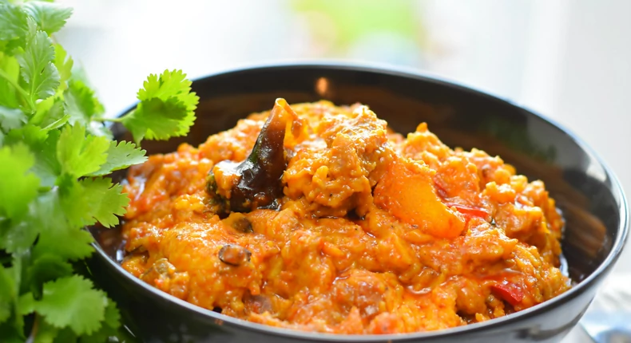

Ikokore

Description
Ikokore is a delicacy peculiar to the people of Ijebu in the Western part ofNigeria.
The yam pottage is made out of grated water yam (also called Isu Ewura in Yoruba).
Ingredients
- Water yam, 1/2 Tuber
- Palm Oil, 2 cooking spoons.
- Chicken or Beef stock/ Water, 3 cups
- 1 Cayenne/ Red bell/ dry ground pepper(3 Tps)
- Scotch Bonnet 1-2.
- Smoked Fish (Eja Kika), 1-2 pieces or Shawa (Bonga fish), Shredded (Optional).
- Dried Fish (Panla), Shredded (Optional), 1-2 piece.
- Ogiri Ijebu (Fermented Locust Beans), 1 Teaspoon.
- Smoked Prawns (Optional), 1/2 cups.
- Crayfish 3 Tbs.
- Dried cow skin /tripe
- Seasoning
Steps
- Slice your water yam into small pieces. Peel each piece then grate using the smallest part of your grater
- When you're done grating the Water Yam, add Seasoning or Salt, 1 tablespoon Crayfish and mix together, if you can tolerate hotness, you can add some Pepper as well. Then set aside
- Blend the Shombo/Tatashe and Scotch Bonnet till smooth and set aside. If you're using just Scotch Bonnet, just blend it on it's own.
- Get a medium size pot and place on a hob on medium heat. When it's hot, add the palm oil, then the Locust Beans..
- Sauté the Locust Beans for a minute, then add the blended Pepper, then the Knorr Cubes and Salt to taste. If you're using Stock, do not add salt as your stock is already seasoned.
PS: If you're using just Dry Ground Pepper or Scotch Bonnet (Ata Rodo), add the Ground pepper or Blended Scotch Bonnet into the palm oil and continue with the other steps, skip the pepper frying process.
- Add the Chicken /Beef Stock if you're using any, if you haven't got Stock, just add water, continue to cook for 2 minutes.
- Add the Shredded Cooked Meats, Fish and Smoked Prawns, any other proteins you're using, then the Ogiri, leave to cook for 10 minutes.
- After 10 minutes, remove all the meat and fish from the stew, leaving just the stew in the pot.
- Turn the heat down to low, now scoop the grated yam into the stew, do this in both big and small lumps. The small lumps will dissolve in the stew, forming a mushy type consistency while the bigger lumps will create the lumpy Ikokore consistency.
Do not stir, leave the contents to boil for 8-10 minutes on low heat.
- Then you can stir a bit using a wooden spoon. Stir and break up clumps if you find it too clumpy or leave as it is if you don't mind. Now, taste for salt and seasoning, adjust if necessary.
- Transfer the cooked meats and fish back into the pot, add the rest of the crayfish and combine gently, be careful when doing this so you don't break the clumps.
- Leave to simmer for 3 - 5 minutes and it's ready.
- Serve Ikokore on its own or with Cold Eba (Eba Tutu), the typical Ijebu way